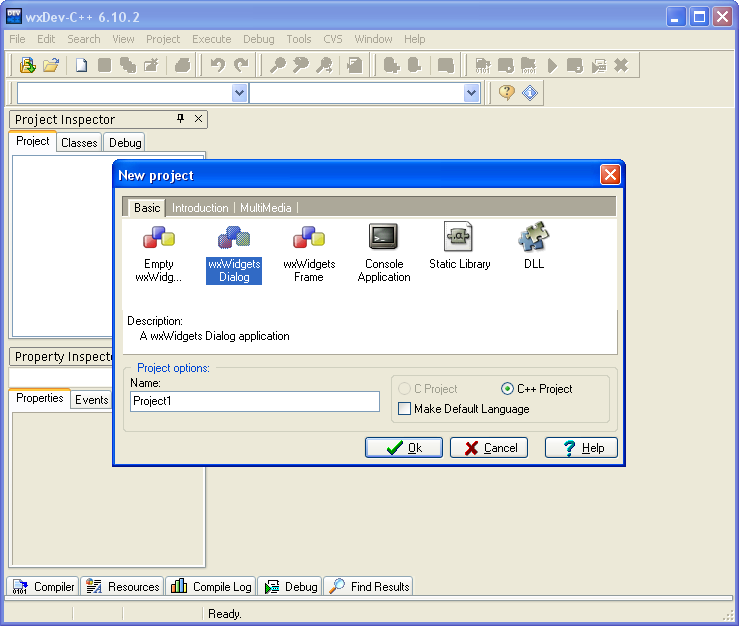
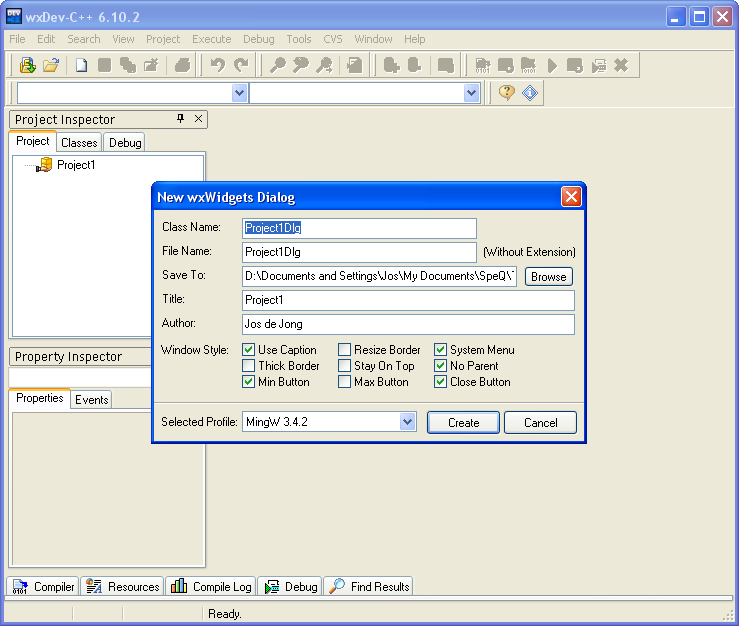

Getting started with wxWidgets in Windows
This tutorial helps you getting started using wxWidgets in Windows. In this tutorial you learn how to create a graphical user interface with wxWidgets using the visual development tool wxDev-C++. We develop a dialog with two statictext boxes, two edit boxes and a button. In the edit boxes you can fill in your name and age. When you press the button, a messagebox will be opened that welcomes you and calculates your year of birth.
In this tutorial:
- Installing wxDev-C++
- Creating a wxWidgets project
- Creating controls in the dialog
- Creating an event for the button
- The executable
- More documentation and tutorials
You can download the project created in this tutorial including executable here (610 KB).
Installing wxDev-C++
First you have to install wxDev-C++ on your computer. wxDev-C++ is a visual development environment for C++ and wxWidgets.
You can download the program for free from the following site:
http://wxdsgn.sourceforge.net/Just use the default setting when installing the program.
Creating a wxWidgets project
Start wxDev-C++. Then choose menu File, new, Project. A dialog opens where you can choose the type and name for the project. Select "wxWidgets Dialog", and enter "Project1" as name for the project.

Next, select the folder where you want to store the project file and the source files. Then, a dialog opens where you can choose options for the dialog. Leave everything default and click the button "Create".

Now the visual designer opens, where you can create controls for the Dialog. On the tab bar (and also in the Project inspector) you see six files made and opened for this project: Project1App.cpp, Project1App.h, Project1App.rc, Project1Dlg.h, Project1Dlg.cpp, Project1Dlg.wxform. All files contain a lot of pre-written code already. Don't get intimidated by that.
To understand why there are six file necessary for only a simple dialog application you need to understand the basics of C++ and wxWidgets. To make a wxWidgets application, you need to create at least a wxApp object. After that you can create one or multiple classes of type wxDialog or wxFrame for your application. In this case we just make one wxDialog, to keep things simple.
There are tree source files for the wxApp object: a header file Project1App.h where the definition of the class is described, a source file Project1App.cpp where the implementation of the class is done, and a resource file Project1App.rc where the images, icons and other resources for the application are stored.
Next, to make a dialog for the application, you need to create an object of type wxDialog. This also requires three files: a header file Project1Dlg.h where the definition of the class is described, a source file Project1Dlg.cpp where the implementation of the class is done, and a file Project1Dlg.wxform for the visual designer. In this last file you can design your dialog graphically, and this is what we are going to do next.
Creating controls in the dialog
In the visual designer, create two controls of type "StaticText" in the upper left of the Dialog, by clicking selecting this control in the list at the right of the screen, and then click and drag in the Dialog where you want to place the control. Change the properties of the two StaticText controls. Select the control, then change the properties in the Property inspector. Give the first the name "lblName" and label "Name"; give the second the name "lblAge" and label "Age". Next, add two controls of type "Edit". Give the first the name "txtName" and text "<enter your name here>", and give the second the name "txtAge" and text "<enter your age here>". Finally, add a control of type "Button" to the dialog. Give it the name "btnClick" and label "Click here". You can now compile the program by choosing menu "Execute", "Compile & Run (F9)". When the program is running, you can enter text in the two edit boxes, and you can click the button. However, nothing happens yet when you click the button, because we have to create an event that will be executed when we click the button.
Creating an event for the button
Close the program. Then select the button. In the Property inspector, click on the tab "Events". There are two events available, OnClick and OnUpdateUI. Select the property OnClick. Drop down the combobox, and choose "<Add new function>". The code editor opens, and a function called "btnClickClick" is created. In this function you see the text "// insert your code here". This function will be executed when you click the button.
Now, replace the content of the function "btnClickClick" with the following code:
// get the text from the two editboxes
wxString nameValue = txtName->GetValue();
wxString ageValue = txtAge->GetValue();
// convert the string with the age to a long value
long age = 0;
ageValue.ToLong(&age, 10);
// calculate the year of birth from the given age and current year,
// then convert it to a string
int yearnow = wxDateTime::GetCurrentYear();
wxString yearofbirth = wxString::Format("%i", yearnow - age);
// open a message box.
wxString info = "Hello " + nameValue + ", welcome!" + "\n" + "\n"
"So you are born in " + yearofbirth + "...";
wxMessageBox(info, "Welcome!");
 You can compile the program again, go to the menu Execute and click on "Compile & Run (F9)". When program is started, you can enter your name and age and press the button "Click here". A messagebox will open that will welcome you and calculate your year of birth.
You can compile the program again, go to the menu Execute and click on "Compile & Run (F9)". When program is started, you can enter your name and age and press the button "Click here". A messagebox will open that will welcome you and calculate your year of birth.
The executable
Once you have compiled the program, the executable is by default located in the subfolder \Output\MingW, and is called "Project1.exe". You can run this executable on other computers directly, without having to install extra components on the specific computers.
The size of the program is large: about 3 MB by default. You can optimize the program in several ways. If you want to optimize the program, go to menu Project, "Project options (Alt+P)". Go to tab "Compiler". On the left you see a list containing "Linker:". Click on it. Then set the value "Strip Executabe" to "Yes". This will reduce the executable to about 2.1 MB. There are some more optimization options under "Optimization". Also, with an executable compressor like PEcompact2, UPX, or Petite you can reduce the size of the executable to about 600 KB.
More documentation and tutorials
For more documentation on wxWidgets, you can:
- Buy the book Cross-Platform GUI Programming with wxWidgets by Julian Smart and Kevin Hock.
- On the tutorials page of the wxWidgets site you find more excellent tutorials.
- Check the site wxWiki, containing a lot of resources, guides, and tutorials.
- Check the site wxCommunity, also containing a lot of resources, add-ons, and applications built with wxWidgets.
- To to the wxWidgets forums.
- Use the online manual of wxWidgets.
Jos de Jong
May 2008